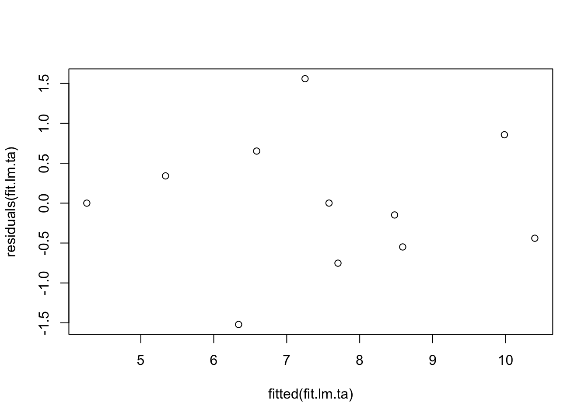
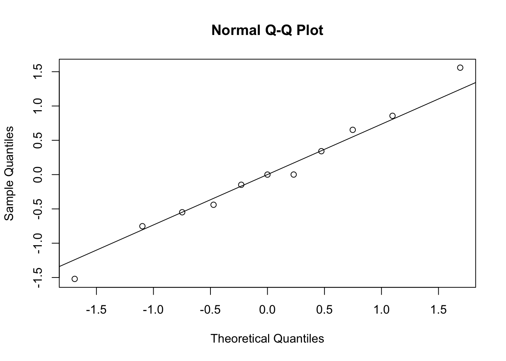

Kapitel 2 Multiple Lineare Regression
Das Material dieses Kapitels ist eine Zusammenfassung aus den Vorlesungsunterlagen von (Bühlmann and Mächler 2014).
Die multiple lineare Regression ist wie folgt definiert. Jedes Individuum \(i\) oder jedes Objekt \(i\) in einem Datensatz ist charakterisiert durch eine Zielgrösse \(y_i\) und durch eine Menge von erklärenden Variablen \(\left\{x_{i,1}, x_{i,2}, \ldots, x_{i,p}\right\}\). Zusammengefasst besteht die bekannte Information für jedes Individuum oder jedes Objekt \(i\) aus einem Datensatz aus der folgenden Menge
\[\left\{x_{i,1}, x_{i,2}, \ldots, x_{i,p}, y_i\right\}\] Das multiple lineare Regressionsmodell versucht die Zielgrösse bis auf einen zufälligen Restterm \(\epsilon\) als lineare Funktion der erklärenden Variablen auszudrücken. Unser Ziel besteht in der Schätzung der unbekannten Parameter, welche im Regressionsmodell enthalten sind. Die nachfolgend gezeigte Modellformel soll die Unterscheidung zwischen erklärenden Variablen und unbekannten Parametern verdeutlichen.
\[\begin{equation} y_i = \beta_i x_{i,1} + \ldots + \beta_p x_{i,p} + \epsilon_i \qquad (i = 1, \ldots, n) \label{eq:MultLinRegForm} \end{equation}\]Fassen wir die Gleichungen über alle \((i = 1, \ldots, n)\) zusammen und verwenden die Matrix-Vektor-Notation, so sieht das lineare Modell in () wie folgt aus.
\[\begin{equation} y = X\beta + \epsilon \label{eq:MultLinRegMatVec} \end{equation}\]Die Reste \(\epsilon_i\) im Modell () haben wir als zufällige Effekte definiert. Somit müssen wir geeignete Annahmen zur Dichteverteilung der \(\epsilon_i\) treffen. Meistens gehen wir davon aus, dass die \(\epsilon_i\) unabhängig sind und der gleichen Verteilung folgen. In der englischsprachigen Literatur wird das mit dem Begriff independent, identically distributed (i.i.d.) bezeichnet. Der Erwartungswert und die Varianz der Zufallsvariablen \(\epsilon\) sind \(E\left[\epsilon_i \right] = 0\) und \(Var(\epsilon_i) = \sigma^2\).
2.1 Beispiele für Lineare Regressionen
2.1.1 Regression mit Achsenabschnitt
Die erste erklärende Variable wir oft als eine Konstante angenommen. Das bedeutet, dass der erste Kolonnenvektor in der Matrix \(X\) gleich dem Eins-Vektor ist. Die konstante erklärende Variable erlaubt es einen sogenannten Achsenabschnitt anzupassen. In skalarer Schreibweise hat das lineare Modell mit Achsenabschnitt die folgende Form
\[\begin{equation}y_i = \beta_1 + \beta_2x_{i2} + \ldots + \beta_px_{ip} + \epsilon_i \qquad (i = 1,\ldots,n)\end{equation}\]2.1.2 Regression durch den Ursprung
Im Gegensatz zur Regression mit Achsenabschnitt steht die Regression durch den Ursprung. Diese kennt keine konstante erklärende Variable. Das Modell ohne Achsenabschnitt sieht dann wie folgt aus.
\[\begin{equation}y_i = \beta_1x_{i1}+ \ldots + \beta_px_{ip} + \epsilon_i \qquad (i = 1,\ldots,n)\end{equation}\]2.1.3 Regression mit transformierten Variablen
Regressionen können auch auf Transformationen der erklärenden Variablen oder auf transformierte Zielgrössen angepasst werden. Als Beispiel verwendet die sogenannte “quadratische” Regression die \(x_{ij}\) und die \(x_{ij}^2\) als erklärende Variablen. Das Modell entspricht dann einer quadratischen Funktion in den \(x_j\) ist aber immer noch eine lineare Funktion im Bezug auf die Parameter \(\beta_j\).
\[\begin{equation}y_i = \beta_1 + \beta_2 x_{i2} + \beta_3 x_{i2}^2 + \epsilon_i \qquad (i = 1,\ldots,n)\end{equation}\]Abgesehen von der quadratischen Regression sind auch andere Arten von Transformationen der erklärenden Variablen denkbar. Ein Beipsiel ist in der folgenden Gleichung gezeigt.
\[\begin{equation}y_i = \beta_i + \beta_2 \log(x_{i2}) + \beta_3 sin(\pi x_{i3}) + \epsilon_i \qquad (i = 1,\ldots,n)\end{equation}\]Auch dieses Modell ist linear in den Parametern \(\beta_j\) und wird somit als lineare Regression bezeichnet.
2.1.4 Anwendungen in den Nutztierwissenschaften
Eine Anwendung der linearen Regression in den Nutztierwissenschaften ist die Schätzung vom Lebendgewicht von Tieren aufgrund des Brustumfangs. Dafür werden Messbänder verwendet, welche auf der einen Seite den Brustumfang angeben und auf der anderen Seite das geschätzte Körpergewicht. Diese Anwendung macht eine Voraussage der Zielgrösse Körpergewicht aufgrund der beobachteten erklärenden Variablen Brustumfang.
Damit eine Voraussage für die Zielgrösse aufgrund der erklärenden Variablen möglich ist, muss zuerst ein angemessener Datensatz vorliegen, in welchem man für jedes Tier beide Informationen, also sowohl Körpergewicht als auch Brustumfang bekannt ist. Aufgrund dieser Informationen können dann die unbekannten Parameter geschätzt werden. Die geschätzten Parameter werden dann für die Vorhersagen verwendet.
Bei diesem ersten Beispiel handelt es sich um eine einfache lineare Regression. Das verwendete Regressionsmodelle hat nur eine erklärende Variable (Brustumfang) und eine Zielvariable (Gewicht). Das zu dieser Anwendung zugehörige Modell lautet
2.1.5 Ziele der linearen Regression
Gute Anpassung: das Modell soll so sein, dass die erklärenden Variablen möglichst präzise Voraussagen zu den Zielvariablen machen. Das Standardtool für die Anpassung ist die Methode der kleinsten Quadrate (
Least Squares).Parameterschätzung: die unbekannten Parameter sollen so geschätzt sein, dass eine Veränderung der erklärenden Variablen in einer entsprechenden Veränderung der Zielgrösse führt.
Vorhersage: noch nicht beobachtete Zielgrössen sollen als Funktionen von erklärenden Variablen vorhergesagt werden können
Fehler und Signigikanz: werden durch Vertrauensintervalle und statistische Tests beurteilt
Modellentwicklung: ist ein interaktiver Prozess, welche durch die oben genannten Ziele beeinflusst wird
2.2 Methode der kleinsten Quadrate (Least Squares)
Gegeben sei das lineare Modell \(y = X\beta + \epsilon\). Wir wollen eine, gemäss den oben formulierten Zielen, möglichst gute Schätzung für \(\beta\) finden. Die folgende Darstellung erklärt, wie die Methode der kleinsten Quadrate funktioniert.
Die Punkte stehen für die Beobachtungen \(y_i\). Die rote Linie steht für die Regressionsgerade. Die Distanz des Punktes zur Projektion in Richtung der \(y\)-Achse auf der Regressionslinie entspricht dem Residuum \(r_i = y_i - x_i^T \hat{\beta}\). Für eine bestimmte Regressionsgerade (rote Linie im Diagramm) wird für jeden Punkt \(y_i\) das entsprechende Residuum \(r_i\) berechnet. Die Residuen \(r_i\) werden quadriert und addiert. Diese summierten Quadrate der Residuen stellt ein Mass dar, wie gut die Regressionsgerade an die Beobachtungspunkte \(y_i\) angepasst ist.
Position und Verlauf der Regressionsgeraden können durch die Wahl des Vektors \(\beta\) beeinflusst werden. Gemäss der Methode der kleinsten Quadrate soll \(\beta\) so bestimmt werden, dass die Summe der quadrierten Residuen minimal wird. Der so bestimmte Vektor \(\beta\) wird dann als Least-Squares-Schätzer bezeichnet. In einer Formel können wir die Berechnung des Least-Squares-Schätzers (\(\hat{\beta}\)), wie folgt ausdrücken.
\[\begin{equation}\hat{\beta} = argmin_{\beta} \| y - X\beta \| ^2\end{equation}\]wobei \(\| .\|\) für die Euklidsche Norm oder die Euklidsche Distanz steht. In einem ersten Schritt geht es darum das Minimum für den Ausdruck \(\| y - X\beta \| ^2\) zu finden. Dabei ist es einfacher, wenn wir folgende Umformung verwenden.
\[\begin{equation}\| y - X\beta \| ^2 = (y - X\beta)^T(y - X\beta) = y^Ty - y^TX\beta - \beta^TX^Ty + \beta^TX^TX\beta\end{equation}\]Leiten wir diesen Ausdruck nach \(\beta\) ab und setzen die erste Ableitung gleich \(0\), dann erhalten wir eine Gleichung für den Least-Squares-Schätzer \(\hat{\beta}\).
\[\begin{equation}-y^TX - y^TX + 2\hat{\beta}^TX^TX = 0\end{equation}\]Aus der obigen Formel können wir die sogenannte Normalgleichung herleiten. Diese lautet
\[\begin{equation}X^TX\hat{\beta} = X^Ty\end{equation}\]Unter der Annahme, dass die Matrix \(X\) vollen Kolonnenrang \(p\) hat, können wir explizit nach \(\hat{\beta}\) auflösen.
\[\begin{equation}\hat{\beta} = (X^TX)^{-1}X^Ty\end{equation}\]Die Residuen \(r_i = y_i - x_i^T\hat{\beta}\) sind Schätzungen für die Resteffekte \(\epsilon_i\) und können somit für die Schätzung von \(\sigma^2\) verwendet werden.
\[\begin{equation}\hat{\sigma}^2 = \frac{1}{n-p}\sum_{i=1}^{n} r_i^2\end{equation}\]Der Faktor \(1/(n-p)\) scheint ungewöhnlich, aber es kann gezeigt werden, dass die Wahl dieses Faktors zur Erwartungstreue von \(\hat{\sigma}^2\) führt. Das heisst, es gilt \(E\left[ \hat{\sigma}^2 \right] = \sigma^2\).
2.2.1 Annahmen hinter dem linearen Modell
Abgesehen davon, dass die Matrix \(X\) vollen Kolonnenrang \(p<n\) haben muss, wurden für die erklärenden Variablen keine Annahmen getroffen. Insbesondere können die erklärenden Variablen kontinuierlich oder diskret sein. Kontinuierliche Variablen sind typischerweise Messgrössen, welche als reelle Zahlen (Gleitkommazahlen) erhoben werden. Diskrete Grössen können nur bestimmte Werte, wie zum Beispiel \(0\) oder \(1\) annehmen.
Damit die Anpassung eines linearen Modells mit der Methode der kleinsten Quadrate Sinn macht und die Tests und Vertrauensintervalle gültig sind, müssen wir gewisse Annahmen treffen.
- Korrektheit des linearen Modells: Das heisst \(E\left[\epsilon_i \right] = 0\) für alle \(i\). Das heisst aber auch, dass die Zielgrössen und die erklärenden Variablen nicht gemischt werden dürfen.
- Alle \(x_i\) sind exakt: Es wird angenommen, dass die Werte für \(x_i\) ohne Fehler beobachtet werden können.
- Konstante Varianz der Resteffekte: \(Var(\epsilon_i) = \sigma^2\) für alle \(i\)
- Resteffekte sind unkorreliert: \(Cov(\epsilon_i, \epsilon_j) = 0\) für alle \(i\ne j\)
- Resteffekte folgen Normalverteilung: Der Vektor \(\epsilon\) der Resteffekte folgt einer multivariaten Normalverteilung.
Falls diese Annahmen verletzt sind, gibt es eine Reihe von Massnahmen, welche getroffen werden können. Bei Verletzung der Annahme 3, können “weighted least squares” Methoden verwendet werden. Ähnlich bei Verletzung der Annahme 4, können wir “generalized least squares” verwenden. Ist die Annahme 5 der Normalverteilung nicht erfüllt, können wir auf sogenannte “robuste Methoden” ausweichen. Falls Annahme 2 nicht zutrifft, braucht es Korrekturen, welche als “errors in variables” bezeichnet wird. Falls die Annahme 1 nicht stimmt, braucht es nicht-lineare Modelle.
Die folgende Grafik zeigt das Beispiel des sogenannten “Pillen-Knicks”. Dabei werden die Anzahl Geburten seit 1930 in der Schweiz gezeigt. Hier sind die Annahmen 1 und 4 verletzt. Dieses Beispiel zeigt auch die Gefahr bei Vorhersagen in Bereiche, wo keine erklärende Variablen vorliegen.
2.2.2 Kein Ersatz der multiplen Regression durch mehrere einfache Regressionen
Eine multiple Regression (mit mehreren erklärenden Variablen) soll nicht durch mehrere einfache Regressionen (mit nur einer erklärenden Variablen) ersetzt werden. Das folgende simulierte Beispiel zeigt weshalb.
Wir betrachten die folgenden erklärenden Variablen \(x^{(1)}\) und \(x^{(2)}\) und die Zielgrösse \(y\) mit folgenden Werten
| x1 | x2 | y |
|---|---|---|
| 0 | -1 | 1 |
| 1 | 0 | 2 |
| 2 | 1 | 3 |
| 3 | 2 | 4 |
| 0 | 1 | -1 |
| 1 | 2 | 0 |
| 2 | 3 | 1 |
| 3 | 4 | 2 |
Die multiple Regression führt zur Lösung der kleinsten Quadrate, welche die Daten exakt beschreibt, so wie diese erzeugt wurden.
\[\begin{equation}y_i = \hat{y_i} = 2x_{i1} - x_{i2} \qquad \text{für alle } i \text{ mit } \hat{\sigma}^2 = 0\end{equation}\]Wird an die Daten nur eine einfache Regression mit der erklärenden Variablen \(x^{(2)}\) und ignoriert \(x^{(1)}\), so erhalten wir das folgende Resultat
\[\begin{equation}\hat{y_i} = {1\over 9}x_{i2} + {4\over 3} \qquad \text{für alle } i \text{ mit } \hat{\sigma}^2 = 1.72\end{equation}\]Der Grund dafür ist, dass die erklärenden Variablen \(x^{(1)}\) und \(x^{(2)}\) korreliert sind. Falls \(x^{(1)}\) steigt, dann steigt auch \(x^{(2)}\). Da aber in der multiplen Regression \(x^{(1)}\) einen grösseren Koeffizienten hat als \(x^{(2)}\), muss dieser Effekt in der einfachen Regression durch \(x^{(2)}\) kompensiert werden. Dies führt zur Abweichung zwischen den Resultaten der beiden Analysen.
2.3 Eigenschaften der Schätzungen
Die Least-Squares-Schätzer sind Zufallsvariablen, da für jeden Datensatz den wir vom gleichen unterliegenden Prozess beobachten, andere Werte resultieren. Damit ändern sich auch die Least-Squares-Schätzer. Da die Schätzer Funktionen der beobachteten Daten sind, haben die Schätzer auch einen zufälligen Charakter. Somit können wir Eigenschaften betreffend den Verteilungen und den Momenten für die Least-Squares-Schätzer herleiten. Die Ergebnisse sind hier nur kurz zusammengefasst.
2.3.1 Momente der Least-Squares Schätzungen
Wir nehmen das folgende lineare Modell an
\[\begin{equation}y = X\beta + \epsilon \text{, } E\left[\epsilon \right] = 0 \text{, } Cov(\epsilon) = E\left[\epsilon\epsilon^T \right] = \sigma^2I_{n\times n}\end{equation}\]Zusammen mit den oben getroffenen Annahmen können wir folgende Aussagen machen
- \(E\left[\hat{\beta}\right] = \beta\), das heisst, \(\hat{\beta}\) ist unverzerrt
- \(E\left[\hat{y}\right] = E\left[y\right] = X\beta\), was aus 1. folgt. Zudem ist, \(E\left[r\right] = 0\)
- \(Cov(\hat{\beta}) = \sigma^2(X^TX)^{-1}\)
- \(Cov(\hat{y}) = \sigma^2P\), \(Cov(r) = \sigma^2(I-P)\)
Die Matrix \(P\) ist definiert als Projektionsmatrix aus \(\hat{y} = Py\). Setzen wir die Least-Squares-Schätzer ein, dann folgt
\[\begin{equation}\hat{y} = X\hat{\beta} = X(X^TX)^{-1}X^Ty = Py\end{equation}\]Somit ist die Matrix \(P\) definiert als \(P=X(X^TX)^{-1}X^T\).
2.3.2 Verteilung der Least-Squares-Schätzer unter normalverteilten Fehlern
Zusätzlich zum linearen Modell nehmen wir an, dass \(\epsilon_i, \ldots, \epsilon_n \text{ i.i.d. } \mathcal{N}(0,\sigma^2)\), dann können wir zeigen, dass
- \(\hat{\beta} \sim \mathcal{N}_p\left(\beta, \sigma^2(X^TX)^{-1}\right)\)
- \(\hat{y} \sim \mathcal{N}_n\left(X\beta,\sigma^2P \right)\), \(r \sim \mathcal{N}_n\left(0,\sigma^2(I-P) \right)\)
- \(\hat{\sigma}^2 \sim \frac{n}{n-p}\chi_{n-p}^2\)
Die Annahme der Normalverteilung ist oft (annähernd) erfüllt und kann durch den zentralen Grenzwertsatz bei grösseren Datensätzen begründet werden. Diese Eigenschaften im Bezug auf die Verteilung der Schätzer führt zur Herleitung von Vertrauensintervallen und statistischen Tests für die geschätzten Parameter. Sind die Annahmen der Normalverteilung nicht erfüllt, müssen wir auf sogenannte robuste Methoden ausweichen. Diese werden hier nicht behandelt.
2.4 Tests und Vertrauensintervalle
2.4.1 Einzeltests
Wir nehmen an, dass das lineare Modell korrekt ist und dass die Resteffekte \(\epsilon_1, \ldots, \epsilon_n \text{ i.i.d. } \sim \mathcal{N}\left(0, \sigma^2 \right)\). Dann haben wir gesehen gemäss den Eigenschaften aus dem vorherigen Abschnitt ist dann \(\hat{\beta}\) normalverteilt.
Im Allgemeinen sind wir daran interessiert, ob ein bestimmter Parameter \(\beta_j\) einen Einfluss hat. Dies lässt sich mit der Nullhypothese \(H_{0,j}: \beta_j = 0\) gegenüber der Alternativen \(H_{A,j}: \beta_j \ne 0\) überprüfen. Da \(\hat{\beta}\) einer Normalverteilung folgt, können wir herleiten, dass unter der Nullhypothese \(H_{0,j}\) gilt
\[\begin{equation}\frac{\hat{\beta_j}}{\sqrt{\sigma^2(X^TX)_{jj}^{-1}}} \sim \mathcal{N}(0,1)\end{equation}\]Da \(\sigma^2\) unbekannt ist, ist die obige Teststatistk in der Praxis nicht brauchbar. Ersetzen wir \(\sigma^2\) durch den Schätzwert \(\hat{\sigma}^2\) so erhalten wir die sogenannte t-Teststatistik.
\[\begin{equation}T_j = \frac{\hat{\beta_j}}{\sqrt{\hat{\sigma}^2(X^TX)_{jj}^{-1}}} \sim t_{n-p}\end{equation}\]Anhand dieses Tests können wir die Relevanz der erklärenden Variablen quantifizieren, indem wir die Teststatistiken \(T_j\) für \(j=1,\ldots,p\) analysieren. Die Beurteilung der Relevanz der erklärenden Variablen aufgrund dieser einzelnen t-Tests birgt zwei Probleme.
- Multiples Testen: Werden sehr viele Tests durchgeführt, dann sind bei einem angenommenen Signifikanz-Niveau von \(\alpha\) automatisch ein Anteil \(\alpha\) aller Tests signifikant. Werden beispielsweise \(100\) Tests auf dem Niveau \(\alpha = 0.05\) durchgeführt, dann sind automatisch \(5\) Tests signifikant.
- Korrelation der erklärenden Variablen: Falls die erklärenden Variablen untereinander korreliert sind, dann beeinflusst dies auch die Testergebnisse und kann diese verzerren.
2.4.2 Globaler Test
Wenn wir testen wollen, ob (abgesehen vom Achsenabschnitt) überhaupt eine erklärende Variable einen Einfluss auf die Zielgrösse hat, dann können wir diese mit folgender Nullhypothese \(H_0: \beta_2 = \ldots = \beta_p = 0\) versus die Alternative \(H_A: \beta_j \ne 0\) für \(j=2,\ldots, p\) tun. Solch ein Test kann mit der Zerlegung der Varianz der Beobachtungen \(y_i\) um das globale Mittel \(\bar{y} = n^{-1}\sum_{i=1}^ny_i\) konstruiert werden. In Vektor-Schreibweise sieht diese Zerlegung wie folgt aus
\[\begin{equation}\|y - \bar{y}\|^2 = \|\hat{y} - \bar{y}\|^2 + \|y - \hat{y}\|^2\end{equation}\]Diese Zerlegung teilt die quadrierten Abweichungen der Beobachtungen \(y\) vom allgemeinen Mittel \(\bar{y}\) in die quadrierten Abweichungen der gefitteten Werte \(\hat{y}\) vom allgemeinen Mittel plus die quadrierten Residuen \(y-\hat{y}\) auf. Eine solche Zerlegung lässt sich am einfachsten in einer Varianzanalysetabelle zusammenfassen.
Im Falle der globalen Nullhypothese haben die erklärenden Variablen keinen Einfluss auf die Zielgrösse. Somit ist \(E\left[y \right] = const. = E\left[\bar{y}\right]\). Daraus folgt, dass der Erwartungswert der mittleren Summenquadrate der Regression gleich \(\sigma^2\) ist. Teilen wir die mittleren Summenquadrate der Regression durch die mittleren Summenquadrate des Rests (Schätzung von \(\sigma^2\)) erhalten wir eine dimensionslose Grösse, welcher einer \(F\)-Statistik entspricht. Unter der Nullhypothese gilt, dass
\[\begin{equation}F = \frac{\|\hat{y} - \bar{y}\|^2/(p-1)}{\|y - \hat{y}\|^2/(n-p)} = F_{p-1,n-p}\end{equation}\]Dies wird als globaler \(F\)-Test der Regression bezeichnet.
Abgesehen von der Bewertung der statistischen Signifikanz mit dem globalen \(F\)-Test, sind wir auch daran interessiert, wie gut die Anpassung des Modells an die Daten ist. Eine mögliche Grösse für die Qualität der Anpassung ist das sogenannten \(R^2\). Dies ist definiert als das folgende Verhältnis.
\[\begin{equation}R^2 = \frac{\|\hat{y} - \bar{y}\|^2}{\|y - \bar{y}\|^2}\end{equation}\]Das \(R^2\) entspricht dem Verhältnis der Variation der Beobachtungen um das globale Mittel, welcher durch die Regression erklärt werden kann. Aus dieser Definition ist klar, dass wir nach Modellen suchen mit einem möglichst grossen \(R^2\).
2.4.3 Vertrauensintervalle
In Anlehnung an den \(t\)-Test der einzelnen Parameter \(\beta_j\) können wir Vertrauensintervalle ableiten. Das zwei-seitige Vertraunensintervall auf dem Niveau \(1-\alpha\) für \(\beta_j\) ist definiert als
\[\begin{equation}\hat{\beta}_j \pm \sqrt{\hat{\sigma}^2(X^TX)_{jj}^{-1}} \ \cdot t_{n-p;1-\alpha/2}\end{equation}\]Hier \(t_{n-p;1-\alpha/2}\) ist das \(1-\alpha/2\)-Quantil der \(t_{n-p}\)-Verteilung.
2.5 Output von R
In R wird eine lineare Regression mit der Funktion lm() angepasst. Die Zusammenfassung der Resultate von lm() ist in der nachfolgenden Diagramm gezeigt.
Die verschiedenen Bereiche der Resultate sind numeriert durch farbige Rechtecke gekennzeichnet. Im ersten Bereich ist unter der Überschrift Call der Funktionsaufruf nochmals aufgeführt. So ist dokumentiert, wie die nachfolgenden Resultate zustande kamen. Der zweite Bereich gibt einige Informationen zur empirischen Verteilung der Residuen. Diese Kennzahlen der Residuen-Verteilung sind nützlich um gewisse Annahmen bezüglich der Residuen im Modell grob überprüfen zu können. Block drei enthält die Resultate der Parameterschätzungen. Abgesehen von den Schätzwerten sind auch die Standardfehler und die Quantile des entsprechenden t-Tests für jeden Parameter enthalten. Die Kolonne ganz links im Block drei zeigt das Signifikanz-Niveau der t-Tests für jeden Parameterschätzwert. Der vierte und letzte Block enthält die Schätzung der Rest-Standardabweichung (residual standard error) und das Testergebnis des globalen F-Tests. Zur Beurteilung der Anpassungsqualität ist das \(R^2\) und eine korrigierte Version des \(R^2\) aufgeführt. Die korrigierte Version des \(R^2\) berücksichtigt die Anzahl der geschätzten Parameter und ist definiert als
2.6 Analyse der Residuen und Überprüfung der Modellannahmen
Die Residuen \(r_i = y_i - \hat{y}_i\) dienen als Annäherungen an die unbekannten Resteffekte \(\epsilon_i\) und zur Überprüfung der Modellannahmen.
2.6.1 Tukey-Anscombe Plot
Der Tukey-Anscombe Plot ist ein graphisches Tool zur Feststellung von Abhängigkeiten zwischen den Residuen \(r_i\) und den gefitteten Werten \(\hat{y}_i\). Im Tukey-Anscombe Plot werden auf der x-Achse die gefitteten Werte und auf der y-Achse die Resiuden aufgetragen. Idealerweise sind die Resiuden zufällig verteilt und zeigen kein Muster. In R erzeugt man den Tukey-Anscombe Plot über die Hilfsfunktionen fitted() und residuals(). Die Ergebnisse der beiden Funktionen werden einfach an die plot()-Funktion übergeben.
data("anscombe")
fit.lm.ta <- lm(y1 ~ ., data = anscombe)
plot(fitted(fit.lm.ta), residuals(fit.lm.ta))
Der obige Plot zeigt eine ideale Situation, wo keine systematischen Muster zu erkennen sind. Die folgenden vier Plots sind (Bühlmann and Mächler 2014) entnommen und zeigen Probleme bei der Anpassung von linearen Modellen auf.
2.6.2 Der QQ-Plot
Annahmen zur Verteilung der zufälligen Grössen im linearen Modell können mit dem sogenannten QQ-Plot überprüft werden. Die Abkürzung “QQ” steht hier für Quantil-Quantil und meint, dass wir die empirischen Quantile den theoretischen Quantilen einer bestimmten Verteilung gegenüberstellen. Im Fall, dass wir gegen die theoretischen Quantile einer Normalverteilung testen, heisst der QQ-Plot auch Normal Plot.
In R können wir den QQ-Plot für die Residuen, wie folgt erzeugen.
qqnorm(residuals(fit.lm.ta))
qqline(residuals(fit.lm.ta))
Stimmen die Quantile der empirische Verteilung der Residuen gut mit den theoretischen Quantilen überein, dann liegen die Punkte im QQ-Plot auf einer Geraden. Falls die empirische Verteilung bedeutende Abweichungen zeigt von der angenommenen Verteilung, so zeigt der Verlauf der Punkte systematische Abweichungen, wie das in den folgenden Graphiken der Fall ist.
2.7 Selektion eines Modells
Gegeben sei das lineare Modell
\[\begin{equation}y_i = \sum_{i=1}^n \beta_j x_{ij} + \epsilon_i \quad (i = 1,\ldots,n)\end{equation}\]mit \(\epsilon_1,\ldots,\epsilon_n \text{ i.i.d. }\), \(E\left[\epsilon_i \right] = 0\) und \(Var(\epsilon_i) = \sigma^2\).
Bis anhin hatten wir immer alle erklärenden Variablen \(x_1,\ldots,x_p\) im Modell berücksichtigt. Wir können uns aber auch fragen, ob dies Sinn macht, wenn gewisse erklärende Variablen nicht relevant sind für die Modellierung der Zielgrössen. Hinzu kommt noch, dass für jede erklärende Variablen ein unbekannter Parameter \(\beta_j\) geschätzt werden muss. Jeder geschätzte Parameter trägt zur Variabilität der gefitteten Werte bei, ob die erklärende Variable relevant ist oder nicht. Somit wird oft nach dem optimalen Modell und nicht nach dem wahren Modell gesucht. Das optimale Modell ist definiert als das Modell mit dem minimalen Subset an erklärenden Variablen, welche alle relevant sind für die Modellierung der Zielgrösse.
Formell können wir das soeben Erklärte wie folgt zusammenfassen. Angenommen, wir wollen die folgende Vorhersage, nennen wir sie \(\mathcal{M}\), optimieren.
\[\begin{equation}\sum_{r=1}^q \hat{\beta}_{j_r}x_{ij_r}\end{equation}\]welche die \(q\) erklärenden Variablen mit den Indices \(j_1,\ldots,j_q \in \{1,\ldots,p\}\) enthält. Wir brauchen ein Entscheidungskriterium um die Vorhersage \(\mathcal{M}\) mit den \(q\) Parametern mit dem vollen Modell, welches alle erklärenden Variablen enthält vergleichen zu können.
2.7.1 Mallows \(C_p\)-Statistik
Die Summenquadrate der Residuen \(SSE(\mathcal{M})\) für die Vorhersage \(\mathcal{M}\) können wir nicht als Kriterium verwenden, denn \(SSE(\mathcal{M})\) nimmt ab mit zunehmener Anzahl \(q\) an Parametern. Der mittlere quadrierte Fehler bei der Verwendung von \(\mathcal{M}\) anstelle vom vollen Modell, kann als
\[\begin{equation}n^{-1} SSE(\mathcal{M}) - \hat{\sigma}^2 + 2\hat{\sigma}^2q/n\end{equation}\]geschätzt werden, wobei \(\hat{\sigma}^2\) der geschätzte Restvarianz aus dem vollen Modell entspricht. Da \(n\) und \(\hat{\sigma}^2\) für alle Submodelle \(\mathcal{M}\) konstant sind, können wir als Kriterium für den Modellvergleich die Statistik
\[\begin{equation}C_p(\mathcal{M}) = \frac{SSE(\mathcal{M})}{\hat{\sigma}^2} - n + 2q\end{equation}\]verwenden.
2.7.2 Modellwahl mit dem \(C_p\)-Kriterium
Für das volle Modell mit \(p\) erklärenden Variablen gibt es \(2^p-1\) Submodelle oder Vorhersagen \(\mathcal{M}\). Somit ist ein Vergleich der \(C_p\)-Statistik aller Submodelle nur machbar, wenn \(p\) nicht zu gross, d.h. kleiner als \(16\) ist. Für \(p \ge 16\) werden die folgenden zwei schrittweisen Algorithmen vorgeschlagen.
2.7.2.1 Vorwärts-Integration (Forward Selection)
- Starte mit dem minimalen Modell \(\mathcal{M}_0\), welches nur ein globales Mittel enthält
- Wähle die erklärende Variable, welche die Summe der quadrierten Residuen am meisten reduziert und nimm diese ins Modell auf
- Wiederhole Schritt 2 bis alle erklärenden Variablen im Modell aufgenommen wurden. Das produziert eine Sequenz von Submodellen \(\mathcal{M}_0, \mathcal{M}_1, \mathcal{M}_2, \ldots\).
- Wähle aus der Sequenz der Submodelle dasjenige mit dem kleinsten Wert der \(C_p\)-Statistik
2.7.2.2 Rückwärts-Elimination (Backward Selection)
- Wir starten mit dem vollen Modell, welches alle erklärenden Variablen enthält
- Entferne die erklärende Variable vom vollen Modell, welche die Summe der quadrierten Residuen am wenigsten reduziert.
- Wiederhole Schritt 2 bis alle erklärenden Variablen entfernt wurden. Das führt zu einer Sequenz von Submodellen.
- Wähle dasjenige Submodell aus der Sequenz an Submodellen mit minimaler \(C_p\)-Statistik
2.7.3 Bemerkungen
Rückwärts-Elimination von erklärenden Variablen funktioniert im allgemeinen besser als Vorwärts-Integration, aber ist auch teuerer im Bezug auf Rechenleistung. In (Bühlmann and Mächler 2014) wird die Vorwärts-Integration für den Fall dass \(p \ge n\) als taugliche Methode bezeichnet. Erfahrungen im Bereich der Effektschätzung in der genomischen Selektion haben aber gezeigt, dass Vorwärts-Integration zu keiner stabilen Prozedur für die Selektion eines guten Modells führt.
Schon die Autoren in (Meuwissen, Hayes, and Goddard 2001) haben für simulierte Daten gezeigt, dass die Vorwärts-Integration von SNP-Effekten als erklärende Variablen bei der Identifikation der wichtigen SNP-Effekte versagte. Offenbar gibt es bie einer sehr grossen Anzahl von erklärenden Variablen \(p\) im Vergleich zur Anzahl der verfügbaren Beobachtungen \(n\) das Problem, dass im Schritt 2 der Vorwärts-Integration viele erklärende Variablen die Summe der quadrierten Residuen um mehr oder weniger den gleich Betrag reduzieren. Dann haben wir das Problem, dass wir eine Auswahl zwischen fast gleichwertigen erklärenden Variablen treffen müssen. Diese Auswahl ist offensichtlich kritisch und kann zu sehr verschiedenen Endergebnissen in der Modellwahl führen.
References
Bühlmann, Peter, and Martin Mächler. 2014. “Computational Statistics.”
Meuwissen, Theo HE, Ben J Hayes, and Mike E Goddard. 2001. “Prediction of Total Genetic Value Using Genome-Wide Dense Marker Maps.” Genetics, no. 157: 1819–29.